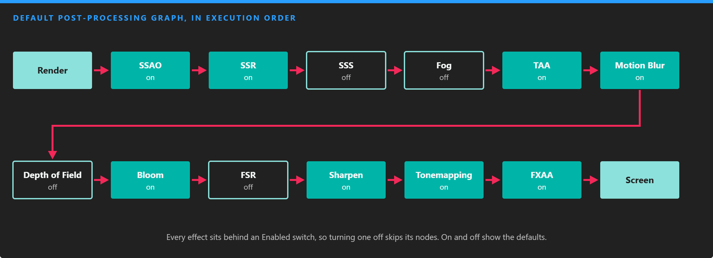
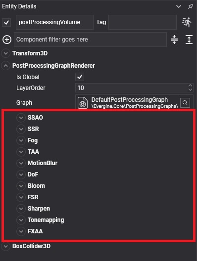
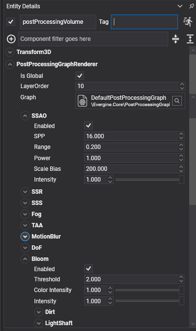

Default Post-Processing Graph
The Evergine.Core package includes the default post-processing graph, which chains the most common effects in the order that gives correct results. Every effect sits behind an Enabled node, so you can turn it on or off without editing the graph, and the nodes of disabled effects are skipped.

Effects that work in linear HDR color (ambient occlusion, reflections, fog, anti-aliasing, blur and bloom) run before tone mapping; FXAA runs last, on the final LDR image.
Effects
| Effect | Enabled by default | What it does |
|---|---|---|
| Screen Space Ambient Occlusion | Yes | Darkens creases and contact areas. |
| Screen Space Reflections | Yes | Adds reflections of what is on screen. |
| Subsurface Scattering | No | Softens light through skin and other translucent materials. |
| Fog | No | Distance and height fog. |
| Temporal Anti-Aliasing | Yes | Smooths edges using previous frames. |
| Motion Blur | Yes | Blurs the image along the camera's motion. |
| Depth of Field | No | Blurs what is out of focus. |
| Bloom, Dirt, Light Shaft and Lens Flare | Bloom and dirt | Glow and lens artifacts around bright areas. |
| FidelityFX Super Resolution | No | Renders at lower resolution and upscales. |
| Sharpen | Yes | Restores detail softened by TAA or upscaling. |
| Tone Mapping and friends | Tone mapping | Maps HDR to the display, plus chromatic aberration, grain, vignette and distortion. |
| Fast Approximate Anti-Aliasing | Yes | Smooths edges in a single pass. |
Configure it in Evergine Studio
Select the post-processing volume in the scene. The PostProcessingGraphRenderer component shows the default graph as one panel per effect, with its switch and its parameters:


Note
The panels in the component are generated by a graph decorator for the default graph. A graph of your own shows its node parameters instead, unless you write a decorator for it; see Custom Post-Processing Graph.